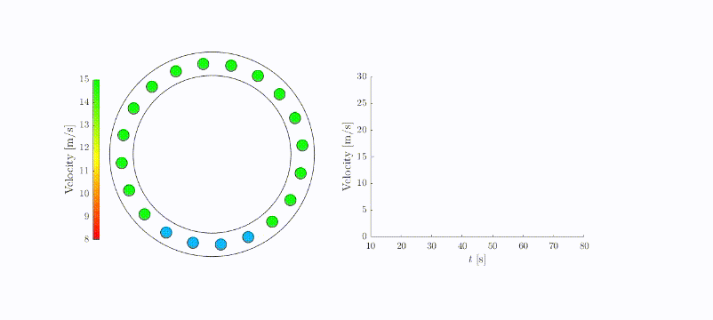
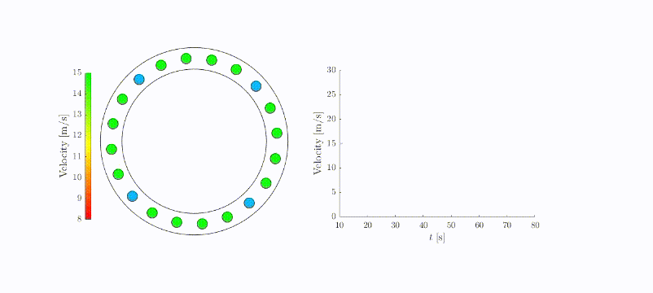

Cooperative formation multiple
Although large-scale numerical simulations and small-scale experiments have shown promising results, a comprehensive theoretical understanding to smooth traffic flow via AVs is lacking. Here, from a control-theoretic perspective, we establish analytical results on the controllability, stabilizability, and reachability of a mixed traffic system consisting of HDVs and AVs in a ring road.
Introduction

Implementation
mkdocs.yml # The configuration file.
docs/
index.md # The documentation homepage.
... # Other markdown pages, images and other files.
mkdocs new [dir-name]- Create a new project.mkdocs serve- Start the live-reloading docs server.mkdocs build- Build the documentation site.mkdocs -h- Print help message and exit.
Animation
Two demonstrations are shown below:
Uniform Distribution: 
Platoon Formation: 
Experiment results
This folder contains files for test cases.
Reference
Li, K., Wang, J., & Zheng, Y. (2020). Cooperative Formation of Autonomous Vehicles in Mixed Traffic Flow: Beyond Platooning. arXiv preprint arXiv:2009.04254.[pdf] Li, K., Wang, J., & Zheng, Y. (2020). Optimal Formation of Autonomous Vehicles in Mixed Traffic Flow. In 21st IFAC World Congress. [pdf] [slides]